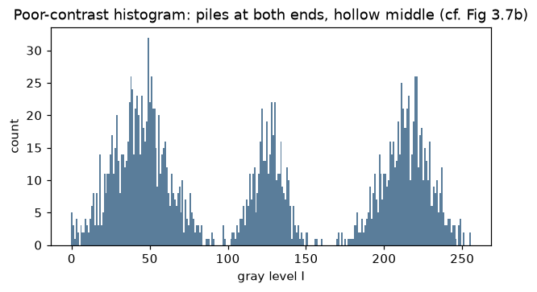
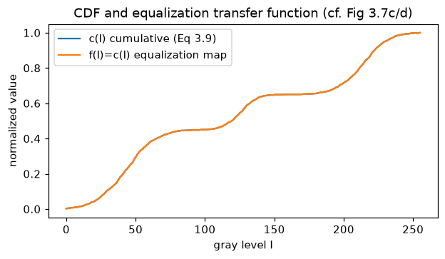
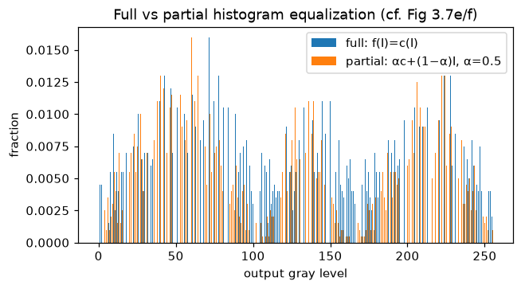
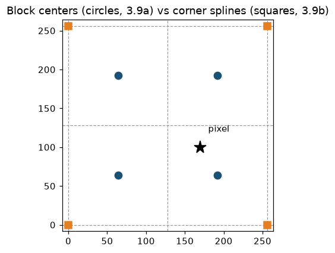
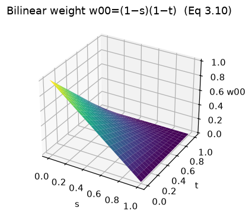

第 3 章 · 直方图均衡
直方图均衡：自动定映射
上集承诺：下节讲直方图均衡。
增益、偏置、伽马都要人来调。
书上第 116 页给出热门自动方案。
从图像自己身上算出映射。
依据：原书第 115–119 页
本集三步
全局均衡：一条曲线
两个代价：发灰、噪声
局部升级：AHE 与 CLAHE
正课第十四集
01 / 9
第 3 章 · 明暗分布
先看清明暗分布
书上第 115 页问：怎么自动定最好的值。
两条路：最暗最亮拉到纯黑纯白。
或者把平均值推向中间灰，再铺满范围。
直方图逐级计数，八位图备 256 格。
依据：原书第 115–116 页；本集实验

三峰直方图：暗端堆积、中段凹陷、亮端堆积｜程序生成，未用教材或论文原图
正课第十四集
02 / 9
第 3 章 · 累积分布
累积分布：查百分位
热门答案：找映射 f(I)，让直方图变平。
借概率技巧：先算累积分布函数。
式 3.9：逐级累加，再除以 N。
N 是像素数，也是比喻里的全班人数。
依据：原书第 116–117 页；本集实验

累积分布 c(I) 与均衡映射 f(I)=c(I)｜程序生成，未用教材或论文原图
正课第十四集
03 / 9
第 3 章 · 全均衡
全均衡的代价：发灰
f(I)=c(I) 就是全均衡。
直方图平了，图也平了：缺对比度、发灰。
暗区噪声被放大，更显眼。
实测噪声 3.0 升到 6.24，α=0.5 为 4.60。
依据：原书第 117 页；本集实验

全均衡与部分均衡 α=0.5 的输出直方图｜程序生成，未用教材或论文原图
正课第十四集
04 / 9
第 3 章 · 部分均衡
部分均衡：α 混合
补救：只部分补偿直方图的不均。
映射写成 αc(I)+(1−α)I。
α=0 是原图，α=1 是全均衡。
实测 α=0.5 落在两者之间，噪声更轻。
依据：原书第 117 页；本集实验
f(I) = α·c(I) + (1−α)·I
CDF 与恒等变换的线性混合；α 在 0 到 1 之间连续可调
正课第十四集
05 / 9
第 3 章 · 局部均衡
一条曲线不够：切块
有些图，一条全局曲线不够。
切成 M×M 块，各做各的均衡。
块边界亮度跳变，叫块效应。
滑动窗口更好，但逐像素重算太慢。
依据：原书第 117–118 页
三级跳
切块：块效应
滑动窗口：太慢
块间平滑插值：AHE
正课第十四集
06 / 9
第 3 章 · AHE 与 CLAHE
AHE 与 CLAHE：块间插值
块间平滑插值，就是 AHE。
限制增益版本叫 CLAHE，Pizer 1987。
式 3.10：四张查找表按双线性权重混合。
权重 (1−s)(1−t)、s(1−t)、(1−s)t、st。
依据：原书第 118–119 页

块中心与角点两种查找表布局，黑星为待处理像素｜程序生成，未用教材或论文原图
正课第十四集
07 / 9
第 3 章 · 实现诀窍
两个实现诀窍
诀窍一：先过四邻表，再混合结果。
线性混合下，两种做法逐点相等。
诀窍二：把查找表放到块的角点。
式 3.11 软直方图：计数按权重拆给四顶点。
依据：原书第 118 页；本集实验

双线性权重 w00=(1−s)(1−t) 曲面｜程序生成，未用教材或论文原图
正课第十四集
08 / 9
第 3 章 · 应用与小结
色调调整与小结
点算子常用于对比度与色调调整。
全均衡发灰、放大噪声；部分均衡折中。
AHE 块间插值，限制对比度即 CLAHE。
作业 3.6/3.7；下集：线性滤波。
依据：原书第 115–119 页；习题第 181 页
三句话
CDF 定映射
α 混合折中
AHE/CLAHE 块间插值
正课第十四集
09 / 9